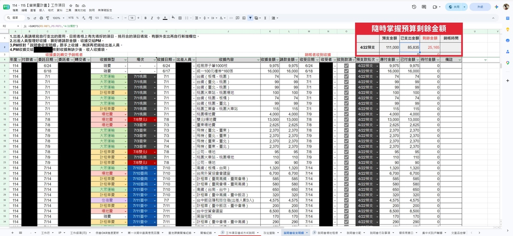
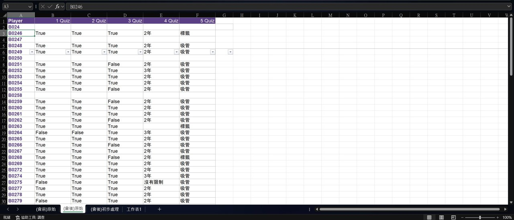
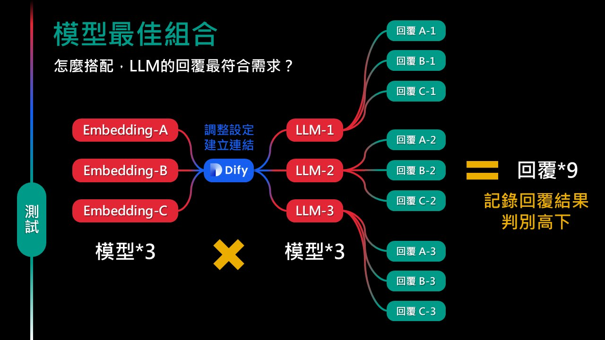
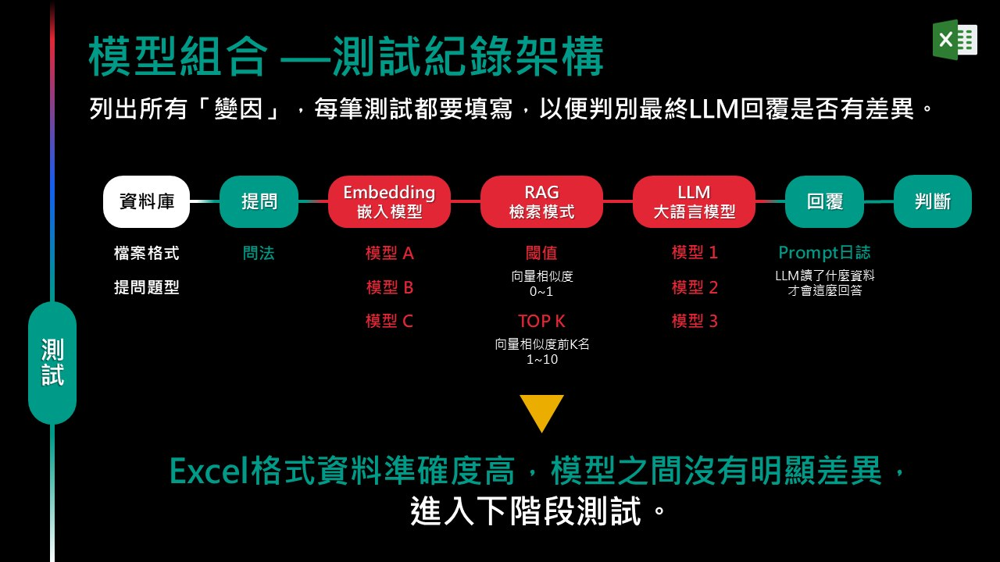

行政工作實績
環資國際｜專案執行（約 6 年）實務紀錄，包含實際設計之記帳範本、前後測四層試算表、Word合併列印及 AI 客服測試分享簡報。
帳務與核銷
負責年度說明會（10～15 場）經費的預算編列、預支、請款與核銷，涵蓋場地、餐盒、交通、住宿、郵寄等項目，年度總額約 10 萬元、核銷細項約 100 筆。
自行設計雲端試算表記帳範本並附填寫說明，由經手同事於活動期間逐筆登錄金額與憑證轉手人員；年底核銷整理時間由約一個工作天縮短至半天內，憑證遺失時可追溯。範本經會計推薦給其他專案參考。

試算表與資料管理
excel資料庫與 Word 合併列印批次作業
具備 Excel 樞紐分析、IF、COUNTIF、XLOOKUP使用經驗；建立郵寄資料主清單搭配 Word 合併列印，批次產出活動場地包裹標籤、獎品寄送與行前通知，整合原本分散於各資料夾的重複資料，減少批次處理的人為錯誤。

說明會學習成效統計表（四層試算表）
設計說明會學習成效統計表（年約 1,000 份問卷）：以自編抽獎流水號串接前後測資料，建立「貼入原始資料即自動計算」的四層試算表，訂定資料比對規則（無法對應者人工檢視後剔除）；成效結果由年底統整提前至每場結束即可得出，並依各題答錯率調整下一場講課重點；完成操作說明並交接。




流程、文件與檔案
檔案分層與版本命名規則
自訂檔案分層與版本規則（年度＼工項＼文件標題＼編輯日期＼版本），為所做工作撰寫備忘與交接說明，離職前以文件與存檔路徑完成交接。
公文撰擬與場地租借合約
負責專案進度報告與請款之公文撰擬與提送（參照既有範本；遇無前例類型時自行查閱規範），並協辦年度說明會場地租借合約。
AI 與自動化
參與專案 AI 客服導入（2026年 1 月上線）：比較多種 LLM 與 embedding／RAG 方案並建立測試紀錄；針對電話紀錄與常見問答兩種資料測試三種組合，採「電話紀錄之提問＋常見問答之回答」，以涵蓋多樣真實問法並降低誤答；擬定資料庫整理 SOP 與清洗流程，資料品質不佳時改向第一線客服徵集常見問答；由 20～30 位同仁參與、累計至少 3,000 筆測試，依題型統計準確率（單一題型達約 90%），並依結果調整資料。

1. 簡報封面

2. 備料與烹調

3. RAG架構圖

4. 方案組合測試

5. 測試紀錄表

6. 品質評估統計
Dify 工作流自建與評估報告
使用 Dify 自建 AI 工作流，便於追蹤與除錯；撰寫 AI 技術科普與導入評估報告，協助承辦單位決策。
名單篩選流程自動化評估
協助評估名單篩選流程自動化：研究過往作法後，建議調整判斷順序並搭配程式自動化，無須全面交由 LLM 處理，經報告後獲採納。
活動營運與溝通
說明會報名前置統籌
統籌年度說明會報名前置作業：整理場次、時程與報名須知供官網上架，自系統後台彙整報名人數估算講義數量，並製作簽到表、工作人員行前通知與場地動線／站位示意圖。
第一線客服與實體講師經驗
擔任專案電話客服代班（每日約 10～20 通），並每年兩度、各連續約一個月每日至少 20 通外撥電話向業者說明新政策，執行 5～6 年；每年至少擔任 3 場說明會講師，課後面對面回答 5～20 位業者的法規與申報問題。
個資與敏感資料最小揭露原則
處理報名與客服資料時採最小揭露原則：簽到單僅列公司名稱、統編與人數；建立 AI 客服資料庫時過濾含聯絡人姓氏、營運狀況與密碼的內容。
跨組經驗分享與流程諮詢
受主管邀請於公司內分享 AI 客服測試心得與線上說明會控場流程；整理之場地名單於組內流通，主管並轉介他組同仁來諮詢。